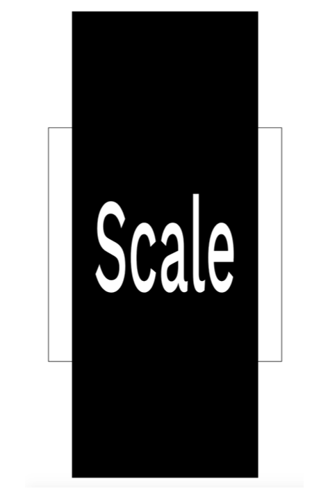
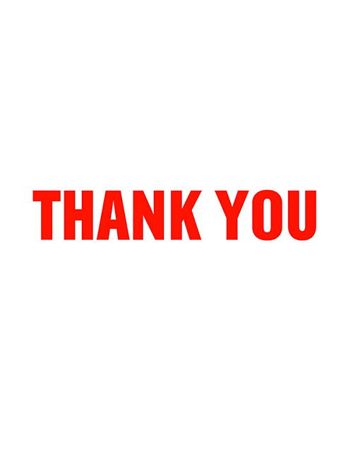
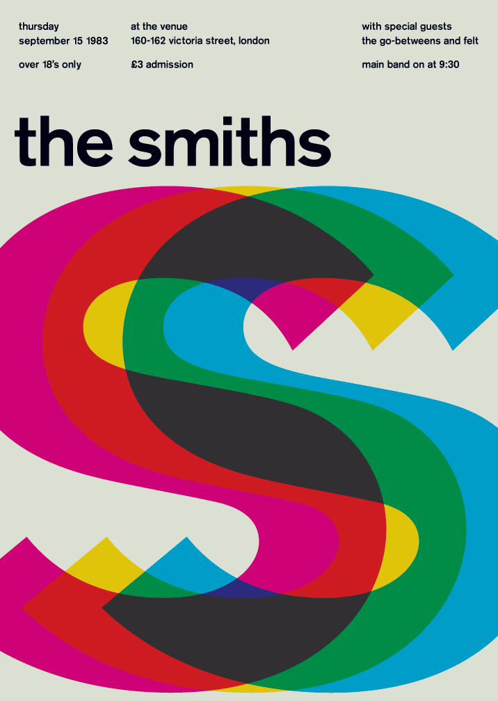
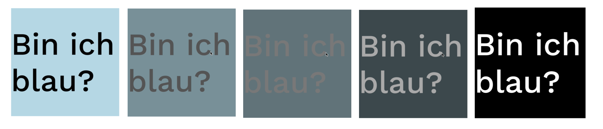

Workshop: Begrüssungen in Bewegung
Im letzten Workshop habt ihr gemeinsam Begrüssungen gesammelt und gestaltet. Heute bringen wir sie in Bewegung: Wenn man mit der Maus über eine Begrüssung fährt, verschiebt, dreht oder verzerrt sie sich, und zwar nicht ruckartig, sondern mit einem Übergang.
Teil 1: Worum es geht
Zwei Werkzeuge spielen zusammen:
transformverändert, wie ein Element aussieht: verschoben, gedreht, skaliert, verzerrt.transitionbestimmt, wie es dorthin kommt: wie lange, mit welcher Beschleunigung, mit welcher Verzögerung.
Teil 2: Transform
Der CSS-Datentyp <transform-function> beschreibt eine Transformation, die das Aussehen
eines Elements beeinflusst. Transformationsfunktionen können ein Element im 2D- oder 3D-Raum drehen, in der
Grösse verändern, verzerren oder verschieben. Sie werden in der Eigenschaft transform
verwendet.
/* Beispiel: Verschiebung um 100px in der x-Achse und 200px in der y-Achse */
transform: translate(100px, 200px);Grundstruktur
Erstellt einen Ordner tag5 und darin die Datei ueb1-transform.html. Macht ein
Beispiel pro Transformation. Mit CSS Grid legen wir jeweils das nicht transformierte und das transformierte
Element übereinander. So seht ihr genau, was sich verändert hat.
<section>
<h1>Name der Transformation</h1>
<div class="group">
<div class="not_transformed"></div>
<div class="transformed">Grüezi</div>
</div>
</section>.group {
display: grid;
grid-template-columns: 1fr;
grid-template-rows: 1fr;
}
/* beide Elemente liegen ursprünglich übereinander */
.not_transformed,
.transformed {
grid-column: 1 / 2;
grid-row: 1 / 2;
height: 400px;
width: 400px;
}
/* zur visuellen Unterscheidung zwei unterschiedliche Stile zuweisen */
.not_transformed {
background-color: black;
}
.transformed {
background-color: rgba(0, 0, 255, 0.5);
color: white;
font-size: 40px;
}translate()
Die Funktion translate() verschiebt ein Element horizontal und/oder vertikal.
/* Ein einziger Wert gilt für die x-Achse */
transform: translate(200px);
transform: translate(50%);
/* Zwei Werte: x-Achse (1. Wert) und y-Achse (2. Wert) */
transform: translate(100px, 200px);
transform: translate(100px, 50%);
transform: translate(30%, 50%);Prozentangaben beziehen sich auf die Grösse des Elements selbst, nicht auf die Seite.
translate(50%) verschiebt eine 400px breite Box also um 200px.
In der Anwendung unseres Beispiels:
/* neue Klasse */
.verschoben {
transform: translate(100px, 200px);
}<div class="transformed verschoben">Grüezi</div>rotate()
Die Funktion rotate() dreht ein Element um einen festen Punkt, ohne es zu verformen.
Positive Werte drehen im Uhrzeigersinn, negative dagegen.
/* Beispiel: 45 Grad im Uhrzeigersinn */
transform: rotate(45deg);transform-origin
Der feste Punkt, um den sich das Element dreht, heisst Transformationsursprung.
Standardmässig ist das der Mittelpunkt des Elements. Mit transform-origin könnt ihr einen
eigenen Ursprung festlegen. Das wirkt sich auch auf scale() und skew() aus.
/* Beispiel: linke obere Ecke */
transform-origin: top left;
/* Beispiel: 50px nach rechts und 50px nach unten */
transform-origin: 50px 50px;Probiert beides aus: einmal ohne transform-origin, einmal mit. Eine Begrüssung, die sich um
die linke untere Ecke dreht, wirkt wie eine Verbeugung.
scale()
Die Funktion scale() vergrössert oder verkleinert ein Element. 1 ist die
Originalgrösse, 0.5 die Hälfte, 2 das Doppelte.
/* Beide Achsen gleich skaliert */
transform: scale(0.8);
/* Beide Achsen unterschiedlich skaliert */
transform: scale(0.8, 2);
Schaut auf das Wort in der transformierten Box: scale() skaliert alles mit, auch die Schrift,
die Rahmen und alle Kinder-Elemente.
skew()
Diese Transformation ist eine Verzerrung. Der Effekt ist, als würdet ihr die Ecken des Elements anfassen
und schräg ziehen. skewX() verzerrt in x-Richtung, skewY() in y-Richtung,
skew() in beide Richtungen. Die Angaben erfolgen in Grad.
transform: skewX(10deg);
transform: skew(20deg, 10deg);Mehrere Transformationen kombinieren
Mehrere Transformationen schreibt ihr hintereinander in eine einzige
transform-Angabe:
/* Falsch!! */
transform: scale(0.8);
transform: rotate(45deg);
/* Richtig!! */
transform: scale(0.8) rotate(45deg);Bei der falschen Schreibweise wird nur rotate ausgeführt. Die zweite Angabe überschreibt die
erste, weil sie später kommt (Cascading Rules).
rotate(45deg) translate(100px) und
translate(100px) rotate(45deg) ergeben unterschiedliche Resultate. Die Transformationen werden
nacheinander ausgeführt, und nach einer Drehung zeigt auch die x-Achse schräg. Probiert es aus!Gut zu wissen: einzelne Eigenschaften
Inzwischen gibt es translate, rotate und scale auch als eigene
CSS-Eigenschaften. Sie überschreiben sich nicht gegenseitig, und man kann sie einzeln verändern:
.transformed {
translate: 100px 200px;
rotate: 45deg;
scale: 0.8;
}3D-Transformationen und Überblick
Teil 3: Eine Begrüssung, dreifach übereinander
Jetzt wird es typografisch. Ihr legt dieselbe Begrüssung dreimal exakt übereinander, jede in einer anderen Farbe. Danach verschiebt ihr zwei davon ein wenig. Wo sich die Farben überlagern, mischen sie sich wie Druckfarben.


Anfang: alle drei übereinander
<div class="group">
<p class="child eins">Grüezi</p>
<p class="child zwei" aria-hidden="true">Grüezi</p>
<p class="child drei" aria-hidden="true">Grüezi</p>
</div>.group {
display: grid;
grid-template-columns: 1fr;
grid-template-rows: 1fr;
}
.child {
grid-column: 1 / 2;
grid-row: 1 / 2;
margin: 0;
font-size: 120px;
font-weight: 900;
mix-blend-mode: multiply;
}
.eins { color: #ff1a00; }
.zwei { color: #00b7ff; }
.drei { color: #ffd400; }Den Effekt der Farbmischung bewirkt mix-blend-mode: multiply: Die Farben werden multipliziert
wie Farbschichten im Druck. Weitere Mischmodi findet ihr auf
MDN.
Todo: verschieben
Verschiebt .zwei und .drei mit transform: translate() um ein paar
Pixel in verschiedene Richtungen. Wie wenig braucht es, damit die Begrüssung zu flimmern beginnt? Was passiert
mit rotate() oder skew()?
aria-hidden="true"? Ein Screenreader würde sonst
«Grüezi Grüezi Grüezi» vorlesen. Mit dem Attribut werden die beiden Kopien für Screenreader
ausgeblendet, sichtbar bleiben sie trotzdem.Teil 4: Transition

Um zu verstehen, was transition macht, zuerst eine Zustandsänderung ohne Übergang.
Ergänzt eure Übungsdatei so:
.transformed {
background-color: lightblue;
}
.transformed:hover {
/* veränderter Zustand */
background-color: black;
transform: translate(100px, 200px);
}Der Wechsel passiert abrupt, ohne Übergang. Vergleicht die beiden Karten:
Mit der Maus über die Karten fahren
Exkurs: :hover ist eine Pseudoklasse
Eine Pseudoklasse ist ein Schlüsselwort, das an einen Selektor angehängt wird und einen bestimmten
Zustand beschreibt. :hover heisst: Der Mauszeiger liegt auf dem Element. Weitere
Pseudoklassen sind zum Beispiel :focus (ausgewählt mit der Tastatur), :active
(gerade angeklickt) oder :first-child.
Übersicht über alle
Pseudoklassen.
:hover: Auf dem Handy gibt es keinen Mauszeiger,
dort funktioniert :hover nur ungefähr beim Antippen. Für heute ist das in Ordnung. Später lösen
wir Zustandsänderungen auch anders aus, zum Beispiel mit JavaScript oder beim Scrollen.transition-property
Legt fest, welche CSS-Eigenschaften mit einem Übergang verändert werden.
transition-property: none;
transition-property: all;
transition-property: font-size;
transition-property: transform, background-color;none: keine Eigenschaft bekommt einen Übergang. Harter Wechsel.all: alle Eigenschaften bekommen einen Übergang.- Eine bestimmte Eigenschaft, z. B.
font-size: nur sie bekommt einen Übergang, alle anderen wechseln hart. Mehrere Eigenschaften trennt ihr mit Komma.
Nicht alles lässt sich animieren. display oder font-family springen immer. Farben,
Grössen, Abstände, opacity und transform lassen sich gut animieren.
transform und opacity laufen am flüssigsten.
transition-duration
Legt fest, wie lange der Übergang dauert. Standard ist 0s, also keine Animation. Angaben in
s (Sekunden) oder ms (Millisekunden).
/* Beispiel: eine halbe Sekunde */
transition-duration: 500ms;transition-timing-function
Legt fest, wie die Zwischenwerte berechnet werden, also ob die Bewegung gleichmässig ist, langsam anfängt, langsam aufhört oder beides.
transition-timing-function: linear;
transition-timing-function: ease;
transition-timing-function: ease-in;
transition-timing-function: ease-out;
transition-timing-function: ease-in-out;
transition-timing-function: cubic-bezier(0.1, 0.7, 1, 0.1);Auf cubic-bezier.com könnt ihr eigene Kurven zeichnen. Mehr dazu auf MDN.
transition-delay
Wartezeit, bevor der Übergang startet.
/* Beispiel: eine Sekunde Verzögerung */
transition-delay: 1s;transition (Kurzform)
Die Eigenschaft transition fasst alle vier zusammen, in dieser Reihenfolge: Eigenschaft, Dauer,
Timing-Funktion, Verzögerung.
transition: all 0.5s ease-out 1s;
/* mehrere Eigenschaften mit unterschiedlichem Timing */
transition: transform 0.6s ease-in-out, background-color 0.2s linear;:hover-Zustand!
Steht sie nur bei :hover, wird nur der Weg hin animiert. Der Weg zurück passiert dann ohne
Übergang. Probiert es aus..transformed {
background-color: lightblue;
transition: all 0.5s ease-out;
}
.transformed:hover {
/* veränderter Zustand */
background-color: black;
transform: translate(100px, 200px);
}Rücksicht auf weniger Bewegung
Manche Menschen bekommen von Bewegung auf dem Bildschirm Schwindel oder Kopfschmerzen und stellen darum im Betriebssystem «Bewegung reduzieren» ein. Mit einer Media Query könnt ihr darauf Rücksicht nehmen:
@media (prefers-reduced-motion: reduce) {
* {
transition: none !important;
}
}Überlegt euch: Welche Bewegung passt zu welcher Begrüssung? Wie bewegt sich ein förmliches «Sehr geehrte Damen und Herren», wie ein «Hoi»? Und wie ein «Dear friend» aus einer Spam-Mail?
Inspirationen
- Plakatsammlung Museum für Gestaltung
- AWWWards Kinetic Typografie
- Studio Dumbar
- Kinetic Type
- ShyMagazine
Übungen
- Zur Repetition: Übungen zu Transform und Übungen zu Transition auf w3schools.
- In
tag3/ueb1-transform.htmlein Beispiel pro Transformation machen: translate, rotate (mit und ohne transform-origin), scale, skew, Kombination. - Eine Begrüssung dreifach übereinanderlegen, mit
mix-blend-modemischen und zwei Schichten verschieben (Teil 3). - Die Verschiebung aus Übung 3 mit
transitionund:hoveranimieren.
Für später
Mit transition lässt sich nur der Weg von einem Zustand zum anderen animieren. Für
Bewegungen, die von selbst laufen oder sich wiederholen, gibt es @keyframes und
animation. Als Spielerei mit reinem CSS:
ein Hamburger-Menü bauen (Video,
Englisch), mit Beispielen für
Animationen.